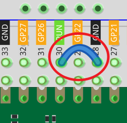
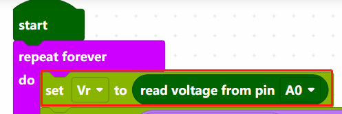
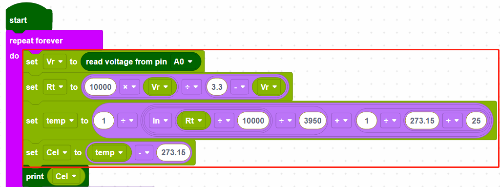
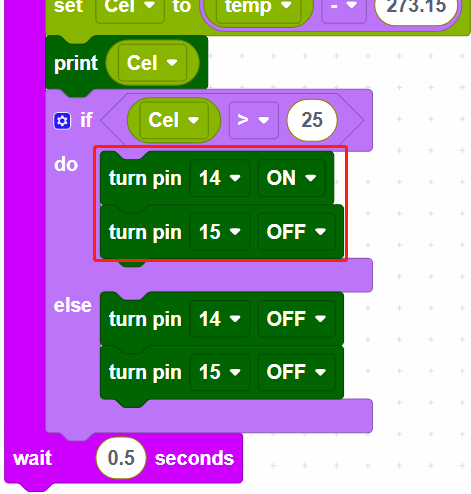

Note
Hello, welcome to the SunFounder Raspberry Pi & Arduino & ESP32 Enthusiasts Community on Facebook! Dive deeper into Raspberry Pi, Arduino, and ESP32 with fellow enthusiasts.
Why Join?
Expert Support: Solve post-sale issues and technical challenges with help from our community and team.
Learn & Share: Exchange tips and tutorials to enhance your skills.
Exclusive Previews: Get early access to new product announcements and sneak peeks.
Special Discounts: Enjoy exclusive discounts on our newest products.
Festive Promotions and Giveaways: Take part in giveaways and holiday promotions.
👉 Ready to explore and create with us? Click [here] and join today!
2.12 Smart Fan¶
Here we make a temperature controlled smart fan with thermistor, L293D, motor, and power module. The fan rotates automatically when the set temperature is reached.
Wiring
{kind=link}
Connect one end of the thermistor to GND and the other end to GP26 (A0). At the same time, GP26 needs to be connected to a 10K resistor to 5V. This way, the higher the temperature, the lower the voltage of A0.
L293D is a motor driver chip, EN is connected to 5V to make L293D work. 1A and 2A are the inputs connected to GP15 and GP14 respectively; 1Y and 2Y are the outputs connected to the two ends of the motor.
Y (output) is in phase with A (input), so if GP15 and GP14 are given different levels respectively, the direction of motor rotation can be changed.
Since DC motors require a high current, we use a power supply module to power the motor here for safety reasons.
Code
Note
You can refer to the image below to write code by dragging and dropping.
Import
2.12_smart_fan.png.pngfrom the path ofeuler-kit\piper. For detailed tutorials, please refer to Import the Code.
{kind=link}
After connecting Pico, click the Start button and the code starts to run.
Click CONSLE, you will see the current temperature in Celsius.
The fan starts spinning when it is above 25 degrees, and stops spinning when it is below 25 degrees.
Note
If the motor is still spinning after you click the Stop button, you need to reset the Run pin on the Pico with a wire to GND at this time, and then unplug this wire to run the code again.
This is because the motor is operating with too much current, which may cause the Pico to disconnect from the computer.

How it Works?

The voltage of A0 (GP26) is read and assigned to the variable [Vr].

These calculations convert the thermistor values into centigrade degree.
Note
Here is the relation between the resistance and temperature:
RT =RN expB(1/TK – 1/TN)
RT is the resistance of the NTC thermistor when the temperature is TK.
RN is the resistance of the NTC thermistor under the rated temperature TN. Here, the numerical value of RN is 10k.
TK is a Kelvin temperature and the unit is K. Here, the numerical value of TK is 273.15 + degree Celsius.
TN is a rated Kelvin temperature; the unit is K too. Here, the numerical value of TN is 273.15+25.
And B(beta), the material constant of NTC thermistor, is also called heat sensitivity index with a numerical value 3950.
exp is the abbreviation of exponential, and the base number e is a natural number and equals 2.7 approximately.
Convert this formula TK=1/(ln(RT/RN)/B+1/TN) to get Kelvin temperature that minus 273.15 equals degree Celsius.
This relation is an empirical formula. It is accurate only when the temperature and resistance are within the effective range.

When the temperature is higher than 25 degrees Celsius, set GP14 to ON and GP15 to OFF to make the motor rotate, or you can reverse their levels. When the temperature is lower than 25 degrees Celsius, set GP14 and GP15 both low to stop the motor.